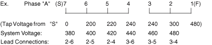
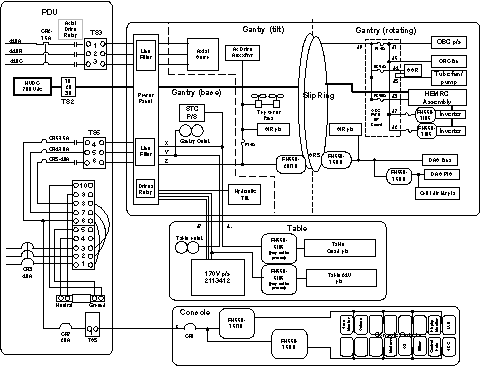
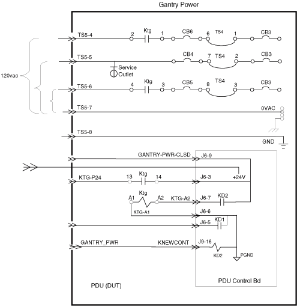
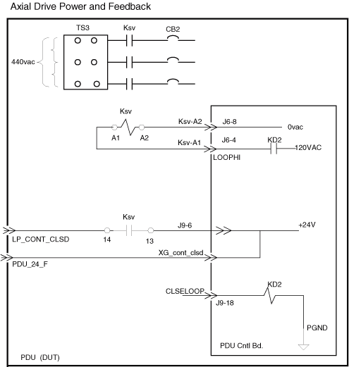
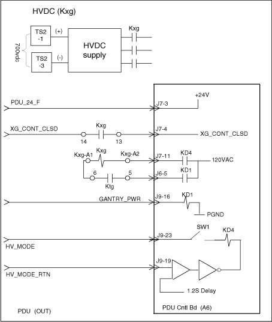
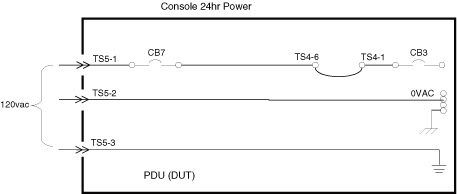
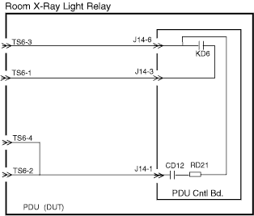
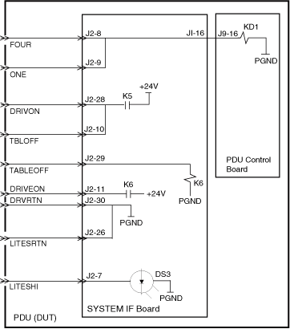
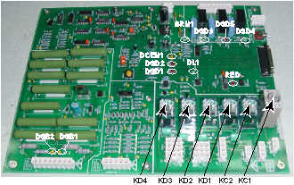

Operating Documentation
Direction 5114043-800, Rev# 9
LightSpeed 3.X Service Methods (Advanced)
Operating Documentation |
While in the stand-by mode, the NGPDU does not generate sound levels in excess of 50dbA, when measured at a distance of one meter from the nearest cabinet surface, in any direction.
The enclosure has a front, rear and top access covers. The top cover is installed on the frame with a captive fastener in the middle of front edge. The front cover weighs less than 22 lbs (10 kg).
A single full-width Lexan safety shield is provided under the front cover. It extends 1/2” below the top front edge of the assembly to the bottom of all HVDC Supply components, including the PDU Control Board.
The rear cover is held in place by two captive fasteners. To maintain a good high frequency ground between internal subassemblies, all internal metal surfaces are solidly grounded to each other.
The enclosure is painted Mist Gray (GEMS Gray #1).
The main input transformer is located in the rear accessible chamber near the bottom of the cabinet, allowing enough room for cable access beneath. For ease of installation and serviceability the remaining components for the HVDC Supply and AC Power Distribution are located on the vertical dividing panel behind the front cover. Refer to Table 1 below, for general component information. Items numbers in table appear in circles of Illustration 1.
Table 1: Major Components
| ITEM | PART NO. | NAME / DESCRIPTION | COMMENTS |
|---|---|---|---|
| 2 | 2326492-2 | NGPDU assemble 2 | For HiSpeed QX/i, non-stockable |
| 3 | 2354578 | Front Cover | |
| 4 | 2354579 | Side Cover | |
| 5 | 2354580 | Rear Cover | |
| 6 | 2354581 | Top Cover | |
| 7 | 2334820 | PDU Control Board | |
| 8 | 2356067 | PDU IF Board | IF Bd |
| 9 | 2351483 | 110A CB ASSY | CB1 |
| 10 | 2351484 | 15A Breaker | CB2 |
| 11 | 2351485 | 40A Breaker | CB3 |
| 12 | 2351486 | 10A Breaker | CB4 |
| 14 | 2295544 | 16A Breaker | CB6 |
| 15 | 2295545 | 20A Breaker | CB7 |
| 16 | 2295543 | 32A Breaker | CB5, CB8 |
| 17 | 2295546 | 4A Breaker | CB9 |
| 18 | 2351488 | 100A Contactor | Kxg |
| 19 | 2351489 | 50A Contactor | Ktg |
| 20 | 2351490 | 18-32A Contactor | Ksv |
| 21 | 2351491 | 14-25A Contactor | Kss |
| 23 | 2351493 | 100A Fuse | F1-3 |
| 24 | 2113764-3 | 6uf / 370Vac Capacitor | C1-6 |
| 25 | 2351494 | 4600uf / 450V Capacitor | C7, C8 |
| 26 | 2351495 | Diode Bridge | BR1 |
| 27 | 2201229-2 | Power Supply | PS |
| 28 | 2351496 | Resistor Assy | R |
| 29 | 2202215-2 | Emergency Switch | SW |
| 30 | 2286488 | LED Assy | LED |
| NOTE: | For a full size version of this illustration, click on the pdf icon below |
Media File 1: Full Size Illustration: Component/Physical Layout

Illustration 1: Component/Physical Layout

The PDU has a rating plate permanently attached to the rear cover, near the top edge and approximately centered on the cabinet. It contains the following information:
For Model 2326492-2:
Manufactured for
GE Medical Systems
by (Vendor Name)
Made in (Country of origin)
Power Distribution Unit
Model No. 2326492-2 / (Vendor model # if different)
Serial No. ____________
Input Voltage: 3 ~ 200 // 240, 380 // 480 V
Line Frequency: 50 / 60 Hz
Input Power:
Momentary 90 kVA @ 0.85 PF
Continuous 20kVA
Weight 770 lbs. (350 kg.)
Mfg Date : ___________
(appropriate test house markings, e.g., UL, ETL, CSA or eq.)
For ease of service identification, an auxiliary rating plate is also located inside the unit, in a visible location when servicing the unit from the front. It includes the GEMS model number and unit serial number.
All replacement parts required for servicing the PDU are directly interchangeable without need of any re-adjustment. Circuit boards and sub-assemblies are given unique part numbers and revisions are completely backward compatible. Any changes to form, fit, or function which affect interchangeability shall require the assignment of a unique part number.
The PDU is designed so no special service tools are required. The assembly can be serviced with standard service tools.
The input power terminals accommodate #4 to #1/0 (fine strand) wire sizes. Ferrules are provided for the maximum wire capacity allowed. Input line fuses rated 100A per phase are used to protect the system. Dual element, time delay motor starting fuses are used.
The primary input power terminations & fuses are mounted in a dedicated enclosure within the PDU. Bulkhead mounted, low inductance, feed through filter capacitors are connected in series with each of the three primary lines on the load side of the primary fuses. The capacitance of each device is 0.025μF to ground.
Low inductance, AC filter capacitors rated for mains connection are installed in a floating wye configuration on the three primary lines, on the load side of the fuses. Each capacitor is rated at 6.0 μF.
The main input transformer is an indoor style, multiple winding, 3-phase isolation transformer. It has an open frame, varnish impregnated core & coil construction. It is suitable for continuous duty without requiring forced air-cooling. The insulation system used is UL, CSA, & IEC recognized for 180C (Class H) or better, and each transformer is labeled accordingly.
The magnetic circuit is designed for nominal 50/60 Hz operation (47 to 63 Hz limits). It accommodates a daily variation of ±10% input voltage, (i.e., 110% input voltage doesn’t cause excessive exciting current and core losses). Under worst case conditions, the transformer’s peak inrush current is less than 1000A when properly connected and energized at 380 V, 50 Hz.
All power for the CT System passes through the primary winding of the input transformer. It is protected by the primary input fuses described above.
The primary winding is designed for delta connection. Voltage selection taps are provided on each phase to accommodate 20 volt steps over the input voltage range of 380 to 480 V. All leads are brought out to a panel for external voltage selection. See Illustration 2.
Illustration 2: Compact PDU Primary taps

The gap in the winding between sections is located at the electrical middle of the winding, i.e., 240vac from the "S" end. This feature allows the use of an alternate connection pattern for 200/220/240 volt input. In this configuration the PDU maximum momentary input rating is limited to 90kVa. (Note: This connection is used with the 2326492-2 assembly only.)
The connection options are:
| System Voltage: | 200 | 220 | 240 |
| Lead Connections: | 1-6 | 1-5 | 1-4 |
This winding contains three normally closed thermal cutout switches, one securely embedded in each phase coil. These switches are set to open at a nominal temperature of 150C. They are capable of interrupting 120 Vac, 1 A, contactor coil power.
At shipment, the primary taps are set to the 480 volt connection.
Secondary #1 is a 208Y/120V wye connected power winding. The phase leads are labeled X1, X2, and X3. The neutral, labeled X0, is isolated and brought out for external connection to ground. See Illustration 3.
Illustration 3: Secondary “X” Winding Configuration

The full winding feeds general-purpose power to the CT system. The winding is protected at 40A per phase with a three-pole, 40A circuit breaker labeled CB3.
Transformer for Model 2326492-2 (86 turns total):
Secondary #2 is a nominal 494Y/283V wye connected power winding. The phase leads are labeled Y1, Y2, and Y3. The neutral, labeled Y0, is isolated and brought out for external connection to ground. See Illustration 4.
Illustration 4: Secondary “Y” Winding

The #2 secondary winding provides x-ray & drives power to the system. The full winding powers the HVDC supply. This is a six-pulse unregulated DC supply, which feeds the X-Ray source. As such, the output current is rich in the non-triplen odd harmonics. In particular, it contains ~35% 5th and ~15% 7th harmonic with additional higher harmonics being substantially lower magnitude.
The 440Y/254V taps feed an external Variable Speed AC Motor Drive. Assuming an 8% duty cycle, this drive produces an effective load current of 4.6A per phase. These taps are to be protected at 15A per phase with a three-pole, 16A circuit breaker, labeled CB2.
Full width electrostatic shields are provided between the primary and secondary windings. These are made from 0.005” copper or aluminum foil, with a minimum 0.5” insulated overlap. Each shield is grounded to the core and frame with green leads as short as practicable. (The lead position and attachment method minimizes shield impedance to high frequency noise signals.)
A general overview of the AC Power Distribution of the CT system is shown in Illustration 5.
| NOTE: | For a full size version of this illustration, click on the pdf icon below |
Media File 2: Full Size Illustration: AC Power Distribution

Illustration 5: AC Power Distribution

The PDU Isolation Transformer, Secondary #1, supplies low voltage AC subsystem power. It is protected at 40A per phase with a three-pole, 40A circuit breaker. The full winding protection breaker is labeled CB3.
A 10 position terminal strip, labeled TS4, is provided in the bulkhead for connection of an optional partial system UPS. This terminal block has compression type terminals approved for use with bare or stranded wire and is suitable for wire size 8AWG (8.5 mm2).
Terminals TS4-1 through TS4-5 provide output power connection to the optional UPS. Terminals TS4-6 through TS4-10 provide the power connections back to the NGPDU from the UPS. See Table 2.
Table 2: UPS Connection
| TERMINAL NUMBER | SIGNAL NAME | FUNCTIONAL DESCRIPTION |
|---|---|---|
| 1 | CB3-A | Phase A, 120VAC power to UPS |
| 2 | CB3-B | Phase B, 120VAC power to UPS |
| 3 | CB3-C | Phase C, 120VAC power to UPS |
| 4 | 0VAC | Neutral (0VAC) to UPS |
| 5 | GND | Safety ground (G/Y) wire to UPS |
| 6 | UPS-A | Phase A, 120VAC power from UPS |
| 7 | UPS-B | Phase B, 120VAC power from UPS |
| 8 | UPS-C | Phase C, 120VAC power from UPS |
| 9 | 0VAC | Neutral (0VAC) from UPS |
| 10 | GNDC | Safety ground (G/Y) wire from UPS |
Jumpers shall connect terminals 1 to 6, 2 to 7, and 3 to 8 with the PDU loads connected to the outputs of terminals 6, 7, & 8. These jumpers will be removed in the field whenever an optional UPS is used with the system.
AC power is distributed to the CT System via seven (7) separate branch circuits. These branches are protected by individual circuit breakers ( see Table 3) .
Table 3: Circuit Breaker
| BREAKER | RATING | POLES | PHASE | LOAD DESCRIPTION |
|---|---|---|---|---|
| CB2 | 16A | 3 | A B C | Axial Drive |
| CB4 | 10A | 1 | B | CT Gantry Service Outlets |
| CB5* | 40A | 1 | C | CT Gantry Rotating Loads |
| CB6 | 16A | 1 | A | Table & CT Gantry Stationary Loads |
| CB7 | 20A | 1 | A | Operator Console |
| CB8 | 30A | 1 | B | PET Gantry |
| CB9 | 4A | 1 | A | NGPDU Control Power Supply |
| *Table service outlet is limited to 10 amperes. | ||||
The output connectors for AC power distribution to external subsystems are listed in Table 4.
Table 4: AC Output Connectors
| SUBSYSTEM | PDU CONNECTOR TYPE |
|---|---|
| Gantry | 40A / 15A, 3P, 5W Phonix UK16N labeled TS5-4 to 8. (30A, 1P, 3W Phonix UK16N labeled TS5-9 to 11 for PET Gantry) |
| Console | 20A, 1P, 3W Phonix UK16N labeled TS5-1 to 3. |
The HVDC power supply is an unregulated, six pulse DC power source that feeds the high voltage subsystem used to generate x-rays. For model 2326492 the output voltage of this supply ranges between a maximum of 740VDC (No Load) and a minimum of 480VDC (minimum sag at a maximum step load of 225ADC). For model 2326492-2 the output voltage of this supply ranges between a maximum of 760VDC (No Load) and a minimum of 525VDC (minimum sag at a maximum step load of 100ADC).
The input to the HVDC Supply is the 3-phase, output from the transformer secondary #2 as previously described. Each phase of this winding is protected by semiconductor fuse, labeled F1, F2, F3. Fuse sizes are indicated below.
For model 2326492-2: F1, F2, F3 = 100 Amp, 660VAC
The load side of the fuses is connected to a three-pole contactor, Kxg, having an AC1 rating of 100 Amps. The load side of the contactor is connected to the input of a 3 phase, full wave bridge rectifier / capacitor filter circuit. An auxiliary contactor, Kss, in series with a 20 ohms / phase resistive soft-start circuit is connected in parallel with the main contacts of Kxg.
EMC FILTER CAPACITORS - C4, C5, C6
Low inductance, AC filter capacitors rated for mains connection are installed in a grounded wye configuration on the load side of Kxg. Each capacitor is rated 6.0 uF and has a minimum operating voltage rating of 330 VAC with a surge voltage rating of at least 2KV. If metal can style capacitors are used, their cans are solidly grounded to chassis metal and they are suitable for 330 VAC line to ground operation.
BRIDGE RECTIFIER - BR1
A 3-phase, full wave bridge rectifier rated 200 Amp, 1600V is used. The bridge rectifier is mounted to an aluminum heat sink, approximately 2°± X 6°± X 1/4°±. Aluminum Association Type 1100- F or equivalent aluminum is used. Thermal compound is used between the heat sink and rectifier and between the heat sink and chassis-mounting surface in accordance with the bridge manufacturer's specification.
HVDC Filter Capacitor( s )
The DC output of the bridge rectifier is filtered with two 4600uf, 450 volt electrolytic capacitors connected in series across the output terminals of the bridge. A discharge resistor network for each capacitor is included on the pdu control board.
HVDC output leads from the capacitors terminate in a three position terminal block, labeled “ TS2”. In addition to the cable ground connection, a cable clamp is provided at the NGPDU bulkhead, which is used for strain relief and 360. termination of the shield of the field installed cable. See Table 5.
Table 5: TS2 Terminal Block
| TERMINAL NUMBER | SIGNAL NAME | FUNCTIONAL DESCRIPTION |
|---|---|---|
| 1 | "+" | HVDC to CT gantry. |
| 2 | GND | Auxiliary safety ground (G/Y) wire to CT gantry. |
| 3 | "-" | HVDC Return to CT gantry. |
The 440V taps of secondary #2 are used to power an external variable speed AC motor drive used for axial rotation of the gantry. The drive uses a conventional three-phase full wave bridge rectifier input circuit. This produces strong 5th & 7th harmonic currents typical of 6-pulse rectification. The maximum load under gantry acceleration conditions is 15A.
The circuit is protected at 15A per phase with a three-pole, 16A circuit breaker, labeled CB6.
The CB6 circuit breaker feeds a three-pole contactor, labeled Ktg. The contactor’s 120VAC coil is controlled externally by the CT system. Auxiliary contacts on the contactor provide status feedback information to the system.
Output leads from the Ksv contactor terminate in a four position terminal block, labeled TS3. In addition to the cable ground connection, a cable clamp is provided at the NGPDU bulkhead, which is used for strain relief and 360. termination of the shield of the field installed cable. See Table 6 .
Table 6: TS3 Terminal Block
| TERMINAL NUMBER | SIGNAL NAME | FUNCTIONAL DESCRIPTION |
|---|---|---|
| 1 | Ksv - 440A | Phase A, 440Vac power to Axial Drive. |
| 2 | Ksv - 440B | Phase B, 440Vac power to Axial Drive. |
| 3 | Ksv - 440C | Phase C, 440Vac power to Axial Drive. |
| 4 | GND | Auxiliary safety ground ( G / Y ) wire to Axial Drive. |
The PDU provides all power to the CT system. A PDU Control Board is located within the unit and provides for proper sequencing of the sub-system power, servo system, and x-ray backup contactor when commanded by the system. To facilitate control, the PDU Control Board contains a low voltage limited energy (LVLE) 24Vdc power supply, which provides the necessary communication power to the system. The output voltage of this supply is 24 VDC, ±3 volts for all conditions of line and load.
For model 2326492-2:
Table 7 is a list of PDU Control Signals that are accessible by means of a 37 position, female subminiature D type receptacle connector located in the output bulkhead. This connector is labeled J2.
Table 7: Subsystem Signal List
| PIN # | SIGNAL NAME | FUNCTIONAL DESCRIPTION |
|---|---|---|
| 1 | +24B | +24Vdc output to Gantry E-Stop Control circuits. |
| 2 | +24B | +24Vdc output to Gantry E-Stop Control circuits. |
| 3 | LP CONT CLSSD | Switched +24Vdc output indicating contactor Ksv is closed. |
| 4 | HVMODE | Current limited +15Vdc output for HV Mode circuit in gantry. |
| 5 | +24A | +24Vdc output to Gantry X-Ray Control circuits. |
| 6 | +24A | +24Vdc output to Gantry X-Ray Control circuits. |
| 7 | LITESHI | +24Vdc signal to indicate the
status of the x-ray and drive power enable. Three states are possible:
|
| 8 | FOUR | Switched 24Vdc input from E-Stop push button control loop. |
| 9 | ONE | Switched +24Vdc output to E-Stop/Gantry reset push buttons. |
| 10 | TBLOFF | Switched +24Vdc output to table tape switch circuit. |
| 11 | DRIVEON | Switched +24Vdc output to gantry to enable elevation, tilt & cradle drives contactors. |
| 12 | 120_RDBK | Switched +24Vdc output indicating contactor Ktg is closed. |
| 13 | BU_CONT_CLSD | Switched +24Vdc output indicating contactor Kxg is closed. |
| 14 | MAN_HVDC | Switched +24Vdc output to gantry to command HVDC on. |
| 15 | MAINS_UV+ | Current limited +15Vdc output for Mains Under-voltage circuit in Gantry. |
| 16 | N/C | no connection |
| 17 | N/C | no connection |
| 18 | DRRDBKRN | Contact closure w.r.t. pin 37 indicating the drives relays are commanded “on”. |
| 19 | GND | Redundant chassis ground connection for cable shield. |
| 20 | PDU_PGND | Signal Ground return for 24Vdc circuits to/from gantry. |
| 21 | PDU_PGND | Signal Ground return for 24Vdc circuits to/from gantry. |
| 22 | CLOSELOOP | +24VDC input signal to close the Axial Drive contactor, Ksv. |
| 23 | HV_MODE_RTN | Switched +15Vdc HV_MODE signal from gantry. |
| 24 | XRAYLITE | +24VDC input signal to close the Hospital Room Light relay, KD6. |
| 25 | EXP_INTLK | Exposure Interlock loop to PGND via Room Door Interlock at TS6-. |
| 26 | LITESRTN | Signal Ground return for LITESHI circuit from gantry. |
| 27 | ESTP_SRC | +24Vdc output to Gantry E-Stop Control circuits. |
| 28 | DRIVON | Switched +24Vdc input from E-Stop/Gantry reset push buttons. |
| 29 | TABLEOFF | Switched +24Vdc input from table tape switch circuit. |
| 30 | DRVRTN | Signal Ground return for DRIVEON circuit from gantry |
| 31 | GANTRY_PWR | +24VDC input signal to close the Gantry Power Contactor, Ktg. |
| 32 | BUCONT | +24VDC input signal to close the Backup Contactor, Kxg. |
| 33 | SYSLITE | +24VDC input signal to close the SYSTEM_ON light |
| 34 | MAINS_UV- | Switched low-side output for mains under voltage circuit. |
| 35 | N/C | no connection |
| 36 | N/C | no connection |
| 37 | DRRDBK | Contact closure w.r.t. pin 18 indicating the drives relays are commanded “on”. |
A ten position terminal block, labeled TS6, is provided in the output bulkhead for connection of the customer room warning lights and door interlock. This terminal block has compression type terminals approved for use with bare or stranded wire and shall be suitable for a wire size range of 14 to 10AWG (2.25 to 5.5 mm2).
Terminals 1 through 8 are used for connection of external hospital room warning lights as described below. Terminals 9 & 10 are used for connection of a room door interlock switch in the system x-ray enable circuit.
EXTERNAL "XRAY ON" LIGHT - A normally open relay contact rated 125 VAC, 10 Amps is connected between Positions 3 & 4 of the terminal block.
EXTERNAL "SYSTEM ON" LIGHT (Currently this function is not yet available) - A normally open relay contact rated 125 VAC, 10 Amps is connected between Positions 5 & 6 of the terminal block.
EXTERNAL "GENERATOR READY" LIGHT - A normally open relay contact rated 125 VAC, 10 Amps is connected between Positions 7 & 8 of the terminal block.
Positions 2, 4, 6 and 8 of the terminal block are jumpered together. Series RC networks having a resistance of 470 ohms, a capacitance of 0.47 uF and a voltage rating of 250 VAC, are connected across terminal block positions 3 & 4, 5 & 6, and 7 & 8 on the Control Board.
The terminal block is labeled as follows:
Positions 1 and 2, "LVAC INPUT".
Positions 3 and 4, "X-RAY LIGHT ".
Positions 5 and 6, " SYS-ON LIGHT".(Not yet Available)
Positions 7 and 8, " READY LIGHT".
In addition, the following information appears near the terminal block:
| Potential for electrical shock. | |
| Turning OFF power to the PDU may not remove power to this terminal block. | |
| Verify removal of power with an appropriate measuring device before servicing. Input voltage not to exceed 30VAC. |
ROOM DOOR INTERLOCK - Positions 9 & 10 of the terminal block provide for a Room Door interlock in the X-Ray Exposure control of the system. Terminal 9 is to be connected to the EXP_INTLK signal (J1-17) and terminal 10 is to be connected to PDU_PGND on the PDU Control Board.
These terminals are clearly labeled "DOOR INTLK SW".
At shipment from the factory, each NGPDU has a 14 AWG (2.25 mm2) jumper wire installed between terminals 9 & 10.
When the 120VAC ON signal is received at the GANTRY_PWR connection, given the auxiliary power switch is closed, relay coil KD2 is energized and its contacts close. This relay completes the circuit to the coil of Ktg, which in turn completes the 120VAC circuit to the gantry and table. See Illustration 6. Stationary gantry and table power is protected by CB6 and gantry rotating power by CB5.
Table and gantry service outlet power is unaffected by 120VAC ON signal and can only be disabled by its associated circuit breaker CB4. Note that CB4, CB5 and CB6 are slaves to master circuit breaker CB3. Table service outlet is limited to 10 amperes.
Illustration 6: Gantry Power Control

Axial Drive Power is controlled by relay Ksv and is protected by circuit breaker CB6. When the PDU control board senses an e-stop condition, NGPDU is disconnected with Gantry_PWR_CLSD loop, which prevents activation of the relay Ksv. See Illustration 7.
Illustration 7: Axial Drive Power Control

When the BUCONT signal is received and the connection between HV_MODE and HV_MODE_RTN is made, the HVDC supply will produce output. When the coils KD4 is energized, the coil Kxg is energized. The contacts on Kxg close and supply power to the HVDC supply. This operation can be inhibited by the PDU control board “E-stop” circuit, through relay contacts Ktg. See Illustration 8.
Illustration 8: HVDC Supply Control

120VAC Power for the console is derived from two legs of 208VAC. Console power is protected by circuit breaker CB7. CB7 is a slave to CB3. See Illustration 9.
Illustration 9: Console Power Control

See Illustration 10 for room light control circuitry.
Illustration 10: Room Light Control

For the following discussion, see Illustration 11.
NORMAL STATE
With the E-stops and tape sensors in normal state, a connection is made between ESTP_SRC and FOUR, and between TBLOFF and TABLEOFF respectively. In this condition, the reset and drives enable lamps are illuminated steadily, the reset light being controlled by the connection between LITESHI and LITESRTN, the drives light by DRIVEON and DRVRTN connections.
TAPE SENSOR
When a table tape sensor is activated, the connection between TBLOFF and TABLEOFF is opened. This situation opens the circuit between DRIVEON and DRVRTN, and turns the drive enable lamp off. The blinking circuit now pulses the reset lamp slowly to indicate the condition.
E-STOP
When an E-stop switch is activated, the connection between ESTP_SRC and FOUR is opened. This situation opens the circuit between DRIVEON and DRVRTN, and turns off the drive enable lamp. The blinking circuit now pulses the reset lamp fast, to indicate the e-stop condition, through the connection LITESHI and LITESRTN.
Illustration 11: E-Stop/Drives Control

There are 17 LEDs on the PDU Control Board. See Illustration 12.
Illustration 12:

The ON / OFF status of these LEDs are explained in Table 8.
Table 8: LED Description
| LED ON CONTROL BOARD | DESCRIPTION | ERROR | ||
|---|---|---|---|---|
| ID | NAME | ON | OFF | |
| DSD1 | Voltage Fault | It’s for HVDC - If the differential buss voltage exceeds 500Vdc within the first 200mS after turning on the PDU Control board, control board shall detect and latch a VFLT condition and shall issue a "VFLT".i.e. DSD1 light. | If the contactors Kxg and/or Kss are closed, the control board should not have this issue.i.e. DSD1 OFF. | DSD1 LED ON (RED) |
| DSD2 | BUSS Fault | It’s for HVDC - If the differential buss voltage does not exceed 200Vdc within the first 200mS after turning on the PDU Control board, control board shall detect and latch a BS_FLT condition and shall issue a "BUSS_FLT". i.e. DSD2 light. | If the contactors Kxg and/or Kss are closed, the control board shall open them,i.e. DSD2 OFF. | DSD2 LED ON (RED) |
| DSD3 | RDY light | This is the "Generator Ready" Light. NGPDU provides isolated terminals KD7 for customer Room Light connections. | This means the "Generator is not ready.". | DSD3 LED OFF (GREEN) |
| DSD4 | X-ray light | From the Gantry to close the "X-Ray ON" Light . NGPDU provides isolated terminals KD7 for customer Room Light connections. | This means the X-ray shouldn’t be ON from Gantry signal. | DSD4 LED OFF (GREEN) |
| DSD5 | SYS light | Input signal from the Gantry to close the"System ON" Light relay. NGPDU provides isolated terminals KD5 for customer Room Light connections. | System OFF | DSD5 LED OFF (GREEN) |
| DSB1 | HV- | Has HVDC- | No HVDC- | DSB1 LED OFF (YELLOW) |
| DSB2 | HV+ | Has HVDC+ | No HVDC+ | DSB2 LED OFF (YELLOW) |
| DCEN1 | DC Enable | If the contactors Kxg and/or Kss are not closed, and there is no issue, DCEN1 is on. | If the contactor Kxg and/or Kss are closed, and there is no issue, DCEN1 is off. | DCEN1 LED OFF(Green) |
| GRN1 | Voltage +24V | 24VDC green status indicator lamp - it will be ON whenever the NGPDU is energized. | 24VDC green status indicateor lamp --it will be OFF whenever ther NGPDU is powered off. | GRN1 LED OFF (Green) |
| DL1 | Phase Loss | A phase undervoltage / open fuse detection circuit on the PDU Control board. If the voltage w.r.t. ground on any one or more phases drops below 185Vac (~70% of the normal), DL1 light. | If contactors Kxg and/or Kss (described above) are closed, no phase loss issue. | DL1 LED ON (RED) |
| RED | Interlock Open | This is +24Vdc output signal to Gantry that indicates the customer room door interlock is open. This signal automatically resets and dynamically tracks the status of the interlock circuit. | It means no interlock happens. | nterlock LED ON (RED) |
| KC1 | Relay LED | Over temperature protect status | Not over temperature protect or less than 30s | LED ON(RED) |
| KC2 | Relay LED | Over temperature protect status | Not over temperature protect | LED ON(RED) |
| KD1 | Relay LED | Ktg Power ON | Ktg Power OFF | LED OFF (Green) |
| KD2 | Relay LED | ksv Power ON | Ksv Power OFF | LED OFF (Green) |
| KD3 | Relay LED | Kss Power ON | Kss Power OFF | LED OFF (Green) |
| KD4 | Relay LED | Kxg Power ON | Kxg Power OFF | LED OFF (Green) |